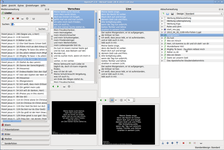
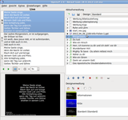
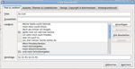
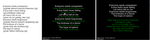
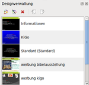
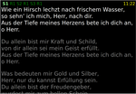

OpenLP
Dieser Artikel wurde für die folgenden Ubuntu-Versionen getestet:
Ubuntu 16.04 Xenial Xerus
Ubuntu 14.04 Trusty Tahr
Zum Verständnis dieses Artikels sind folgende Seiten hilfreich:
OpenLP  ist ein Programm zur Beamersteuerung, das weit über die rein technische Widergabe hinausgeht. Es richtet sich besonders an christliche Gemeinden, die im Gottesdienst oder bei anderen Veranstaltungen Liedtexte aus der Bibel und andere Multimediainhalte präsentieren wollen.
ist ein Programm zur Beamersteuerung, das weit über die rein technische Widergabe hinausgeht. Es richtet sich besonders an christliche Gemeinden, die im Gottesdienst oder bei anderen Veranstaltungen Liedtexte aus der Bibel und andere Multimediainhalte präsentieren wollen.
Funktionen:
Verwalten von Liedtexten
Darstellen von Bildern und Videos
Vorschaufunktion für Lieder, Bibeltexte oder Bilder
Import und Darstellung von Präsentationen aus PowerPoint, Apache OpenOffice und LibreOffice
Themen mit Farbverläufen, Hintergrundbildern oder -farben sowie Textarten und Texteffekten
Importfunktion und Exportfunktion für Themen
Themen können entweder global, pro Ablauf oder pro Lied angewendet werden
Speichern und Laden der Abläufe für eine Veranstaltung
Pop-Up-Funktion für Ankündigungen oder Durchsagen
Darstellung von mehreren Bibeltexten innerhalb eines Ablaufes
Importfunktion für Bibeln von CSV-Dateien
Suchfunktion für bestimmte Worte oder Phrasen in einem Lied oder einer Bibelübersetzung
Import von Lieder aus der CCLI-Datenbank
Verknüpfen von Audiomaterial als Hintergrundmusik oder ähnliche Anwendungen
OpenLP ist für verschiedene Betriebssysteme (Mac OS X, Linux und Windows) verfügbar und ist derzeit in folgende Sprachen übersetzt: Afrikaans, Deutsch, Englisch, Portugiesisch und Spanisch.
Installation¶
OpenLP ist in den offiziellen Paketquellen vorhanden, folgendes Paket muss installiert werden [1]:
openlp (universe)
 mit apturl
mit apturl
Paketliste zum Kopieren:
sudo apt-get install openlp
sudo aptitude install openlp
PPA¶
Um die aktuellste Version zu installieren, kann man ein "Personal Package Archiv" (PPA) [2] nutzen.
Adresszeile zum Hinzufügen des PPAs:
ppa:openlp-core/release
Hinweis!
Zusätzliche Fremdquellen können das System gefährden.
Ein PPA unterstützt nicht zwangsläufig alle Ubuntu-Versionen. Weitere Informationen sind der  PPA-Beschreibung des Eigentümers/Teams openlp-core zu entnehmen.
PPA-Beschreibung des Eigentümers/Teams openlp-core zu entnehmen.
Damit Pakete aus dem PPA genutzt werden können, müssen die Paketquellen neu eingelesen werden.
Nach dem Aktualisieren der Paketquellen erfolgt die Installation wie oben angegeben.
Bedienung¶
Bei Ubuntu-Varianten mit einem Anwendungsmenü erfolgt der Programmstart über den Menüeintrag "Multimedia -> OpenLP" [3]. Ansonsten verwendet man den Befehl openlp. Startet man OpenLP das erste Mal, so kann man mit dem Einrichtungsassistenten erste Lieder, Bibeln und Designs hinzufügen. Diese zunächst eher kleine Auswahl kann später sukzessive erweitert werden. Die Standardansicht mit Medienverwaltung, Vorschau, Liveansicht und Ablaufverwaltung kann jeweils auch in eine einfache Einrichtenansicht oder Liveansicht geändert werden. Dadurch wird die Darstellung übersichtlicher.
|  |
| OpenLP mit allen verfügbaren Ansichten |
|  |
| OpenLP in der Live-Ansicht |
OpenLP ist dafür konzipiert, alle Medieninhalte die im Verlauf einer Veranstaltung dargestellt werden sollen, über eine zentrale Bedienoberfläche zu verwalten und deren Abfolge zu steuern. Hierzu werden diese Elemente zu einem Ablauf zusammengestellt, mit dessen Hilfe sie dann nach Bedarf wiedergegeben werden können. Um das gewährleisten zu können, nutzt OpenLP teilweise weitere Software im Hintergrund, um einzelne Medien wiedergeben zu können. Das sind beispielsweise der VLC-Player zum Abspielen von Videos oder LibreOffice zum Darstellung von Präsentationen.
Tastenkürzel¶
| Tastenkürzel | |
| Taste | Bedeutung |
| ⏎ | Zeigt das Element live an |
| ↑ | Zeigt die nächste Folie oder Strophe an |
| ↓ | Zeigt die letzte Folie oder Strophe an |
| V | Gehe zu Strophe |
| C | Gehe zu Refrain |
| B | Gehe zu Bridge |
| P | Gehe zu Überleitung |
| I | Gehe zu Intro |
| E | Gehe zu Ende |
| O | Gehe zu Anderes |
| Esc | Folie schließen |
| . | Dunkelt das Bild ab |
| D | Zeigt den Desktop |
| ← | Zeigt das vorherige Element im Ablaufplan |
| → | Zeigt das nächste Element im Ablaufplan |
Erstellen von Liedern¶
|  |
| Lieder bearbeiten |
Lieder können neu erstellt werden oder bearbeitet werden. Dazu gibt es entsprechende Symbole, alternativ können diese Funktionen im Kontextmenü  ausgeführt werden. Im Reiter "Titel & Liedtext" kann der Titel und Zusatztitel eines Liedes hinterlegt werden. Der Liedtext kann entweder als ganzes mit der Schaltfläche "Alle Bearbeiten" oder durch "Hinzufügen" einzeln hinzugefügt werden. Dabei können die Abschnitte einzeln als Strophe, Überleitung, Refrain, Bridge, etc. mit entsprechender Nummerierung klassifiziert werden. Ist ein Abschnitt zu lang für eine Bildschirmseite, wird diese automatisch umgebrochen. Da dies nicht immer erwünscht ist (z.B. wenn nur zwei weitere Zeilen auf der nächsten Folie erscheinen), kann eine optionale Teilung' an bestimmten Stellen definiert werden.
ausgeführt werden. Im Reiter "Titel & Liedtext" kann der Titel und Zusatztitel eines Liedes hinterlegt werden. Der Liedtext kann entweder als ganzes mit der Schaltfläche "Alle Bearbeiten" oder durch "Hinzufügen" einzeln hinzugefügt werden. Dabei können die Abschnitte einzeln als Strophe, Überleitung, Refrain, Bridge, etc. mit entsprechender Nummerierung klassifiziert werden. Ist ein Abschnitt zu lang für eine Bildschirmseite, wird diese automatisch umgebrochen. Da dies nicht immer erwünscht ist (z.B. wenn nur zwei weitere Zeilen auf der nächsten Folie erscheinen), kann eine optionale Teilung' an bestimmten Stellen definiert werden.
Die Versfolge besteht aus den jeweiligen Abkürzungen und ihrer Nummerierung, also S1 für Strophe 1, S2 für Strophe 2, etc.. Die entsprechende Abkürzung findet man direkt in der Textübersicht neben dem Text. Verschiedene Versfolgen können bei den Kommentaren hinterlegt werden. So kann diese einfach per Kopieren und Einfügen geändert werden.
Wichtig ist auch der Reiter "Autoren, Themen und Liederbücher". Insbesondere die Pflege der Einträge für Liederbücher und Nummern erleichtern das Auffinden von Liedern ungemein. Autoren können - auch per Mehrfachauswahl - in einer Liste ausgewählt werde. Autoren müssen, bevor sie ausgewählt werden können, erst hinzugefügt werden. Dazu gibt man den Autor im Textfeld ein und klickt auf "Hinzufügen". Die Autorendatenbank kann auch über die Schaltfläche "Datenbankeinträge verwalten" direkt bearbeitet werden. Liederbücher werden zwar auch gespeichert, können aber auch direkt eingegeben werden.
Hinweis:
Statt Autoreninformationen können auch einfach die Liederbücher hinterlegt werden. Dies hat den Vorteil, dass diese Information in der Liedersuche auftauchen, allerdings den Nachteil, dass nicht mehr nach Autoren gesucht werden kann.
In diesem Reiter können auch "Themen" hinterlegt werden. Diese ermöglichen, wenn sie gepflegt werden, ein thematisches Suchen oder ein thematisches Inhaltsverzeichnis. Im Reiter "Design, Copyright & Kommentare" kann zum einen ein spezielles "Design" zu diesem Lied gespeichert werden. Wird dieses Feld leer gelassen, wird in der Regel das im Ablauf angegebene Design benutzt. Weiterhin können Copyright-Informationen eingetragen werden. Diese werden - mit Ausnahme der CCLI-Nummer - in der Fußzeile angezeigt. Kommentare werden nicht auf der Folie angezeigt.
Im Reiter "Hintergrundmusik" können mehrere oder einzelne Musikstücke angegeben werden, die abgespielt werden, wenn dieses Lied angezeigt wird.
Textformatierung¶
Die Texte können durch verschiedene Formatierungsvorlagen formatiert werden. Eine Übersicht findet sich im Menü "Einstellungen → Konfiguriere → Formatvorlagen".
Fremd- und mehrsprachige Lieder¶
Es empfiehlt sich, für Lieder, die in mehreren Sprachen vorliegen, eine eindeutige Notation zu finden. Eine Möglichkeit ist es, immer einen eindeutigen Titel in Klammern zu hinterlegen. So kann FJ4 129 bspw. unter folgenden Liedern gefunden werden:
"So groß ist der Herr (How great is our god): Deutschsprachige Version"
"How great is our god (So groß ist der Herr): Englischsprachige Version"
|  |
| Formatvorlagen für Mehrsprachigkeit |
Nun kann das Lied immer über seinen englischsprachigen Titel (oder die Liederbuchnummer) gefunden werden. Mehrsprachige Lieder müssen nun separat gepflegt werden. Es bietet sich an, die fremdsprachigen Textpassagen durch Formatierungen entsprechend abzusetzen. Bei schwarzem Hintergrund bietet sich bspw. weiße und grüne Schrift an.
Es gibt ein kleines Programm im OpenLP-Forum, dass einem die Zusammenstellung der Lieder erleichtert. So kann es die einzelnen Folien von zwei verschiedenen Liedern entweder mit alternierenden Zeilen oder blockweise zusammenstellen. Dabei kann die Formatvorlage frei gewählt werden.
Importieren von Liedern¶
Lieder können aus verschiedenen Quellen über den Menüpunkt "Datei→ Importieren → Lied" importiert werden. Mögliche Importquellen sind neben OpenLP selbst (aus der OpenLP-eigenen Datenbank) CCLI/SongSelect (siehe unten), EasySlides, EasyWorshop, OpenSong, SongBeamer und andere.
Lieder aus CCLI-Songselect importieren¶
Hat man in der CCLI-Songselect-Weboberfläche ein Lied gefunden, so kann man den Text im Beamersoftwareformat herunterladen. Über den Menüpunkt "Datei → Importieren → Lied" kann man das Format "CCLI/SongSelect" und eine oder mehrere so heruntergeladene Dateien auswählen. Es ist wichtig, die Lieder später den eigenen Bedürfnissen anzupassen. So wird standardmäßig keine Versfolge und keine Liederbüchereinträge importiert.
|  |
| Designübersicht |
Designs verwalten¶
Designs in OpenLP sind vergleichbar mit Formatvorlagen von Textdokumenten oder dem Folienmaster bei Präsentationen. Sie legen die grafische Darstellung von Texten aus der OpenLP-eigenen Datenbank fest. Also Textanordnung, Schriftart und -größe, Hintergrund und alle Eigenschaften die weiter von Interesse sind.
Folien über andere Ausgaben legen¶
OpenLP bietet die Möglichkeit, sich vor jedes andere vom selben Computer auf dem Projektionsbildschirm dargestellte Bild zu setzen. Dazu wählt man ein Design mit einem transparenten Hintergrund.
Bühnenmonitor und Fernbedienung¶
Für folgenden Punkte benötigt man meist zunächst eine funktionierende Netzwerkverbindung und die IP-Adresse des Rechners, auf dem OpenLP ausgeführt wird. Wie die IP-Adresse eines Computers ermittelt werden kann, wird unter Systeminformationen ermitteln beschrieben. Eine funktionierende Netzwerkverbindung erreicht man beispielsweise, wenn der Präsentationscomputer und ein weiteres Gerät wie ein Computer, Samrtphone oder Tablet mit dem selben WLAN oder LAN verbunden sind.
|  |
| Bühnenmonitor |
Gibt es kein funktionierendes WLAN oder LAN, so kann man sich, gesetzt den Fall, beide Endgeräte haben WLAN, trotzdem verbinden. Dazu baut man eine Ad-Hoc Verbindung zwischen den Geräten auf. Hat man ein Samrtphone und einen WLAN-fähigen Computer, so kann auf dem Smartphone auch Tethering aktiviert werden. Dadurch kann der Computer eine WLAN-Verbindung zum Smartphone aufbauen. Problematisch kann diese Art der Verbindung aber bei großen Datenmengen sein.
Grundsätzlich gibt es zwei Möglichkeiten, OpenLP fernzusteuern. Die eine ist mit allen Geräten, die einen aktuellen Browser besitzen, möglich. Hierzu wird lediglich eine Webanwendung aufgerufen. Die andere ist eine spezielle App für Geräte mit dem Betriebssystem Android. Diese findet sich bei Google Play unter OpenLP Remote .
Links¶
Vergleich von Beamerprogrammen
 - speziell vor dem Hintergrund der Einbindung von Bibeltexten
- speziell vor dem Hintergrund der Einbindung von BibeltextenLUKi e.V.
- Linux User im Bereich der KirchenAnwender-wiki
Das Anwender-wiki für den deutschsprachigen Raum
- Erstellt mit Inyoka
-
 2004 – 2017 ubuntuusers.de • Einige Rechte vorbehalten
2004 – 2017 ubuntuusers.de • Einige Rechte vorbehalten
Lizenz • Kontakt • Datenschutz • Impressum • Serverstatus -
Serverhousing gespendet von